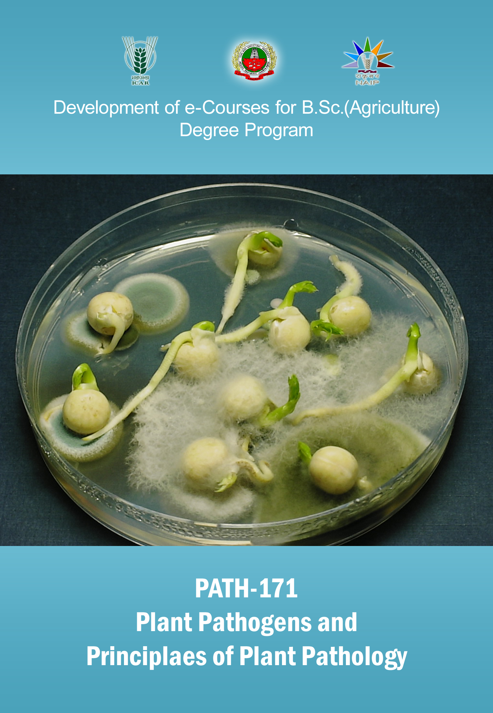

PLANT PATHOGENS AND PRINCIPLES OF PLANT PATHOLOGY :: (
PATH 171
)
(2+2)

Syllabus
Select the lecture topic...
Lec 01 -
Introduction
Lec 02 -
Important plant pathogenic...
Lec 03 -
General Characters of fungi...
Lec 04 -
Nomenclature-Binomial...
Lec 05 -
Division I: Myxomycota,...
Lec 06 -
Division II: Eumycota...
Lec 07 -
Subdivision: Zygomycotina...
Lec 08 -
Subdivision: Ascomycotina,...
Lec 09 -
Subdivition: Basidiomycotina,...
Lec 10 -
Subdivition: Deuteromycotina...
Lec 11 -
Prokaryotes: classification...
Lec 12-
Plant viruses-general...
Lec 13 -
Viroids - general chara...
Lec 14 -
Definition and objective ...
Lec 15 -
Terms and Concepts ...
Lec 16 -
Phenomenon of infection ...
Lec 17 -
Pathogemsis – Role...
Lec 18 -
Defense Mechanism...
Lec 19 -
Plant disease epidemiology...
Lec 20 -
Plant Disease Forcasting...
Lec 21 -
Remote sensing...
Lec 22 -
General principles of plant...
Lec 23 -
Regulatory methods...
Lec 24 -
Cultural methods...
Lec 25 -
Biological control and PGPR...
Lec 26 -
Physical Methods – Heat...
Lec 27 -
Chemical methods – study...
Lec 28 -
Host plant resistance...
Lec 29 -
Application of biotechnology...
Lec 30 -
Disease Management...
Lec 31 -
Integrated Plant Disease...